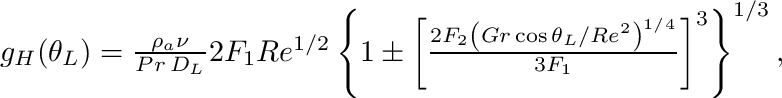
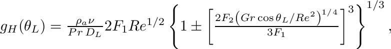
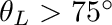
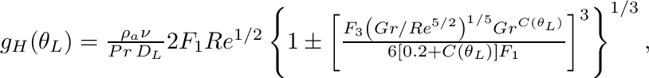

|
.
v1.2.0
|
|
.
v1.2.0
|

| Dependencies | NVIDIA CUDA 9.0+ gcc/g++ 5.5+ Visualizer plug-in |
|---|---|
| CMakeLists.txt | set( PLUGINS "lidar" ) |
| Header File | #include "LiDAR.h" |
| Class | LiDARcloud |
The LiDAR plugin is used to process terrestrial LiDAR data into information that is useful for plant models. For example, this may be to determine leaf area and angle distributions at the voxel scale, or to reconstruct individual leaves and add them to the Context.
| Package | |||
|---|---|---|---|
| NVIDIA CUDA 5.0+ | Mac OSX:$ brew install Caskroom/cask/cuda | Debian/Ubuntu:$ sudo apt-get install cuda | Unknown |
| Constructors |
|---|
| LiDARcloud( void ) |
The LiDARcloud class contains point cloud data, and is used to perform processing operations on the data. The class constructor does not take any arguments.
The algorithms associated with the LiDAR plug-in work with data obtained from a rectangular scan pattern. In this scan pattern, points are sampled at equally spaced intervals in both the zenithal (  ) and azimuthal (
) and azimuthal (  ) directions. At a given azimuthal angle, some range of zenithal angles are consecutively scanned, which represents a "scan line". Each scan line starts at some zenithal angle min and ends at some zenithal angle max. After recording a scan line at the first azimuthal angle min, the scanner incrementally moves to the next adjacent azimuthal scan direction and records the next scan line until it reaches the azimuthal angle max.
) directions. At a given azimuthal angle, some range of zenithal angles are consecutively scanned, which represents a "scan line". Each scan line starts at some zenithal angle min and ends at some zenithal angle max. After recording a scan line at the first azimuthal angle min, the scanner incrementally moves to the next adjacent azimuthal scan direction and records the next scan line until it reaches the azimuthal angle max.
The number of zenithal points within each scan line is given by  , and the total number of scan lines (i.e., number of individual azimuthal directions) is is given by
, and the total number of scan lines (i.e., number of individual azimuthal directions) is is given by  .
.
Angles are typically specified as degrees. Distance units are arbitrary, but must be used consistently.


Each scan has a set of parameters or "metadata" that must be specified in order to process the data. Some parameters are optional, while some are required. The following metadata is needed to define the overall scan itself, in addition to individual scan hit points:
| Metadata | Description | Default behavior |
|---|---|---|
| Origin | (x,y,z) coordinate of the scanner. This is the position where the scanner rays are sent from. | None: REQUIRED |
| Ntheta | Number of scan points in the theta (zenithal) direction, i.e., number of rows in scan point table. | None: REQUIRED |
| min (degrees) | Minimum scan theta (zenital) angle. min=0 if the scan starts from upward vertical, min=90 is the scan starts from horizontal, etc. | 0 |
| max (degrees) | Maximum scan theta (zenital) angle. max=90 if the scan ends at horizontal, min=180 is the scan ends at downward vertical, etc. | 180 |
| Nphi | Number of scan points in the phi (azimuthal) direction, i.e., number of rows in scan point table. | None: REQUIRED |
| min (degrees) | Minimum scan phi (azimuthal) angle. min=0 if the scan starts pointing in the +x direction, min=90 if the scan starts pointing in the +y direction, etc. | 0 |
| max (degrees) | Maximum scan phi (azimuthal) angle. max=90 if the scan ends pointing in the +y direction, min=180 if the scan ends pointing in the -x direction, etc. NOTE: max could be greater than 360 if min>0 and the scanner makes a full rotation in the in the azimuthal direction, in which case max= min+360. | 360 |
| translation | Global (x,y,z) translation to be applied to entire scan, including the origin and all hit ponts. | No translation. |
| rotation (degrees) | Global spherical rotation (theta,phi) to be applied to the entire scan, including the origin and all hit ponts. | No rotation. |
In addition to scan metadata, the data collected by the scan itself must also be added to the plug-in. At a minimum, this consists of the Cartesian (x,y,z) coordinates of each hit in the scan. Additionally, hit points may also have an associated r-g-b color value, or some other scalar data value such as reflectance or temperature. For the processing algorithms to work, the scan direction associated with each hit point must also be known. This can be specified as a ( , ) spherical coordinate, or using the row (i.e., index in the scanline: 1...  ) and column (i.e., scanline index: 1... ).
) and column (i.e., scanline index: 1... ).
| Data | Description | Default behavior |
|---|---|---|
| (x,y,z) position | (x,y,z) coordinate of the hit point relative to the scan origin (i.e., the location of the scanner head). | None: REQUIRED |
| ray direction | Spherical direction (theta, phi) of the ray. Ray directions are used to construct the scan hit table. There could be multiple hits for a given ray direction if a full-waveform instrument is used in multiple return mode. | Calculated automatically using the scanner origin and the (x,y,z) hit position. |
| color | r-g-b color of scan hit point. | red |
| data | Floating point data values associated with the hit point. This could be reflectance, temperature, etc. | No data created. |
Scan metadata is typically specified by loading an XML file containing the relevant metadata for each scan. The XML file specifies the path to an ASCII text file that contains the data for each scan. The code below gives a sample XML file for loading multiple scans. As specified in the metadata table above, not all entries are required.
<helios> <scan>
<filename> /path/to/data/file.xyz </filename>
<ASCII_format> zenith azimuth x y z r255 g255 b255 </ASCII_format>
<origin> 0 0 0 </origin>
<size> 2500 4500 </size>
<thetaMin> 30 </thetaMin> <!-- OPTIONAL - default: 0 -->
<thetaMax> 130 </thetaMax> <!-- OPTIONAL - default: 180 -->
<phiMin> 0 </phiMin> <!-- OPTIONAL - default: 0 -->
<phiMax> 360 </phiMax> <!-- OPTIONAL - default: 360 -->
<translation> 1.2 1.5 -10.2 </translation> <!-- OPTIONAL - default: 0 0 0 -->
<rotation> 20 180 </rotation> <!-- OPTIONAL - default: 0 0 -->
<distanceFilter> 50 </distanceFilter> <!-- OPTIONAL - default: Infinity -->
<reflectance> 1300 </reflectance> <!-- OPTIONAL - user-defined data -->
</scan>
</helios>The ASCII text file containing the data is a plain text file, where each row corresponds to a hit point and each column is some data value associated with that hit point. The "ASCII_format" tag defines the column format of the ASCII text file (in this case, file.xyz). Each entry in the list specifies the meaning of each column. Possible fields are listed in the table below:
| Label | Description | Default behavior |
|---|---|---|
| x | x-component of the (x,y,z) Cartesian coordinate of the hit point. | None: REQUIRED |
| y | y-component of the (x,y,z) Cartesian coordinate of the hit point. | None: REQUIRED |
| z | z-component of the (x,y,z) Cartesian coordinate of the hit point. | None: REQUIRED |
| zenith (or zenith_rad) | Zenithal angle (degrees) of scan ray direction corresponding to the hit point. If "theta_rad" is used, theta has units of radians rather than degrees. | Calculated from scan origin and hit (x,y,z). |
| azimuth (or phi_rad) | Azithal angle (degrees) of scan ray direction corresponding to the hit point. If "phi_rad" is used, phi has units of radians rather than degrees. | Calculated from scan origin and hit (x,y,z). |
| r (or r255) | red component of (r,g,b) hit color. If "r" tag is used, r is a floating point value and 0<r<1. If "r255" is used, r is an integer and 0<r<255. | r=1 or r255=255 |
| g (or g255) | green component of (r,g,b) hit color. If "g" tag is used, g is a floating point value and 0<g<1. If "g255" is used, g is an integer and 0<g<255. | g=0 or g255=0 |
| b (or b255) | blue component of (r,g,b) hit color. If "b" tag is used, b is a floating point value and 0<b<1. If "b255" is used, b is an integer and 0<b<255. | b=0 or b255=0 |
| (label) | User-defined floating-point data value. "label" can be any string describing data. For example, "reflectance", "temperature", etc. | N/A |
The XML file can be automatically loaded into the point cloud using the loadXML() function, as illustrated below.
#include "Context.h"
#include "LiDAR.h" using namespace helios; int main( void ){ LiDARcloud pointcloud; //Initialize the LiDAR point cloud pointcloud.loadXML("/path/to/file.xml");}Rectangular grid cells are used as the basis for processing point cloud data. For example, total leaf area (or leaf area density) may be calculated for each grid cell. Grid cells or "voxels" are parallelpiped volumes. The top and bottom faces are always horizontal, but the cells can be rotated in the azimuthal direction.
Grid cells are defined by specifying the (x,y,z) position of its center, and the size of the cell in the x, y, and z directions. Additional optional information can also be provided for grid cells, which are detailed below.
| Tag | Description | Default behavior |
|---|---|---|
| center | (x,y,z) Cartesian coordinates of cell center. | None: required. |
| size | Length of cell sides in x, y, and z directions. | None: required. |
| rotation | Azimuthal rotation of the cell in degrees. | 0 |
| Nx | Grid cell subdivisions in the x-direction. | 1 |
| Ny | Grid cell subdivisions in the y-direction. | 1 |
| Nz | Grid cell subdivisions in the z-direction. | 1 |
The grid cell subdivisions options allow the cells to be easily split up into a grid of smaller cells. For example, Nx=Ny=Nz=3 would create 27 grid cells similar to a "Rubik's cube".
Grid cell options can be specified in an XML file using the tags listed in the table above. Multiple grid cells are added by simply adding more <grid>...</grid> groups to the XML file.
<grid>
<center> 0 0 0.5 </center>
<size> 1 1 1 </size>
<rotation> 30 </rotation> <!-- OPTIONAL - default: 0 -->
<Nx> 3 </Nx> <!-- OPTIONAL - default: 1 -->
<Ny> 3 </Ny> <!-- OPTIONAL - default: 1 -->
<Nz> 3 </Nz> <!-- OPTIONAL - default: 1 -->
</grid>A triangulation between adjacent points is typically required for any of the available data processing algorithms. In the triangulation, adjacent hit points are connected to form a mesh of triangular solid surfaces. The algorithm for performing this triangulation is described in detail in Bailey and Mahaffee (2017a).
There are two possible options to be specified when performing the triangulation. A required option is , which is the maximum allowable length of a triangle side. This parameter prevents triangles from connecting adjacent leaves (i.e., we only want triangles to be formed with neighboring points on the same leaf). Typically we want to be much larger than the spacing between adjacent hit points, and much smaller than the characteristic length of a leaf. For example, Bailey and Mahaffee (2017a) used 5cm for a cottonwood tree.
Another optional parameter is the maximum allowable aspect ratio of a triangle, which is the ratio of the length of the longest triangle side to the shortest triangle side. This has a similar effect as the parameter, and works better in some cases.
The following code sample illustrates how to perform a triangulation.
#include "Context.h"
#include "LiDAR.h" using namespace helios; int main( void ){ LiDARcloud pointcloud; //Initialize the LiDAR point cloud pointcloud.loadXML("/path/to/file.xml"); //Load the XML file pointcloud.triangulateHitPoints( 0.05, 5 ); //Perform triangulation with Lmax=0.05 and maximum aspect ratio of 5 }Using the triangulation and defined grid cells, the plug-in can calculate the leaf area (and leaf area density) for each grid cell. The algorithm for calculating leaf area is described in detail in Bailey and Mahaffee (2017b).
Performing the calculations is simple and requires no inputs, which is illustrated with the following code sample. Note that the leaf area calculation requires that the triangulation has been performed beforehand. If no triangulation is available, the plug-in will assume a uniformly distributed leaf angle orientation ( ). The leaf area calculation also requires that at least one grid cell was defined.
#include "Context.h"
#include "LiDAR.h" using namespace helios; int main( void ){ LiDARcloud pointcloud; //Initialize the LiDAR point cloud pointcloud.loadXML("/path/to/file.xml"); //Load the XML file pointcloud.triangulateHitPoints( 0.05, 5 ); //Perform triangulation with Lmax=0.05 and maximum aspect ratio of 5 pointcloud.calculateLeafAreaGPU(); //Calculate leaf area for each grid cell }A leaf-by-leaf reconstruction can be performed for the plant of interest using the method described in Bailey and Ochoa (2018). The reconstruction utilizes the triangulation and leaf area computations to ensure the correct leaf angle and area distributions on average, and thus requires that these routines have been run before performing the reconstruction.
There are two types of available reconstructions. One is a triangular reconstruction that directly uses triangles resulting from the triangulation to produce the reconstruction. The advantage is that it doesn not require any assumption about the shape of the leaf and can give a more direct reconstruction in some cases, however this reconstruction is typically not recommended as it often results in many small triangle groups that don't necessarily resemble actual leaves. This reconstruction is performed using the leafReconstructionTriangular() function, whose arguments are thresholds for the minimum and maximum area of reconstructed triangular leaf groups.
The other type of reconstruction is the "Alpha Mask" reconstruction, which replaces the triangle groups with a "prototype" leaf (which is an alpha mask). This ensures that all reconstructed leaves are representative of an actual leaf in terms of shape and size. This reconstruction is performed using the leafReconstructionAlphaMask() function. This function's arguments, in addition to area thresholds, are the aspect ratio of the prototype leaf (length along midrib divided by width perpendicular to midrib) and the path to a PNG image file to be used for the leaf alpha mask.
There is a function that can automatically add all reconstructed elements (triangles or alpha masks) to the Helios Context, which is addLeafReconstructionToContext().
Below is an example of performing a reconstruction using alpha masks and adding the alpha masks to the Context.
#include "Context.h"
#include "LiDAR.h" using namespace helios; int main( void ){ LiDARcloud pointcloud; //Initialize the LiDAR point cloud pointcloud.loadXML("/path/to/file.xml"); //Load the XML file pointcloud.triangulateHitPoints( 0.05, 5 ); //Perform triangulation with Lmax=0.05 and maximum aspect ratio of 5 pointcloud.calculateLeafAreaGPU(); //Calculate leaf area for each grid cell pointcloud.leafReconstructionAlphaMask( 0.001, 0.02, "plugins/visualizer/textures/ElmLeaf.png" ); //Perform the reconstruction Context context; //Initialize the Context pointcloud.addLeafReconstructionToContext( &context ); }Results can be visualized using the Visualizer plug-in for Helios. There are two possible means for doing so. First, is to add the relevant geometry to the Context, then visualize primitives in the Context using the Visualizer. This works for the triangulation and plant reconstructions, but cannot be used to visualize just the point cloud since there is no "point" primitive in the Context. The next section describes how to accomplish this.
The second option is to add any geometry directly to the Visualizer. There are several functions build in to the LiDAR plug-in that can to this automatically, which are listed below.
| Function | Description |
|---|---|
| LiDARcloud::addHitsToVisualizer( Visualizer * visualizer, const uint pointsize ) | Add all hits in the point cloud to the visualizer. |
| LiDARcloud::addGridToVisualizer( Visualizer * visualizer ) | Add all grid cells to the visualizer, which are displayed as translucent voxels. |
| LiDARcloud::addTrianglesToVisualizer( Visualizer * visualizer ) | Add all triangles to the visualizer, which are colored by the r-g-b color value. |
| LiDARcloud::addTrianglesToVisualizer( Visualizer * visualizer, const uint gridcell ) | Add triangles from a specified grid cell to the visualizer, which are colored by the r-g-b color value. |
The following code sample illustrates how to visualize the point cloud.
#include "Context.h"
#include "LiDAR.h"
#include "Visualizer.h" using namespace helios; int main( void ){ LiDARcloud pointcloud; //Initialize the LiDAR point cloud pointcloud.loadXML("/path/to/file.xml"); //Load the XML file Visualizer vis( 1000 ); //Initialize the visualizer pointcloud.addHitsToVisualizer( &vis, 1 ); //Add the hit points to visualizer vis.plotInteractive(); }Results of data processing can be easily written to file for external analysis. The following table lists these functions. Data is written to an ASCII text file, where each line in the file corresponds to a different data point (e.g., hit point, triangle, etc.).
| Function | Description |
|---|---|
| LiDARcloud::exportTriangleNormals( const char* filename ) | Write the unit normal vectors [nx ny nz] of all triangles formed from triangulation. |
| LiDARcloud::exportTriangleNormals( const char* filename, const int gridcell ) | Write the unit normal vectors of triangles formed from triangulation that reside in a specified grid cell. |
| LiDARcloud::exportTriangleAreas( const char* filename ) | Write the areas of all triangles formed from triangulation. |
| LiDARcloud::exportTriangleAreas( const char* filename, const int gridcell ) | Write the areas of triangles formed from triangulation that reside in a specified grid cell. |
| LiDARcloud::exportLeafAreas( const char* filename ) | Write the leaf area contained within each voxel. Each line of the output file corresponds to the total leaf area within each voxel. |
| LiDARcloud::exportLeafAreaDensities( const char* filename ) | Write the leaf area density of each voxel. Each line of the output file corresponds to the leaf area density of each voxel. |
The following code sample illustrates an example of how to write results to file.
#include "Context.h"
#include "LiDAR.h" using namespace helios; int main( void ){ LiDARcloud pointcloud; //Initialize the LiDAR point cloud pointcloud.loadXML("/path/to/file.xml"); //Load the XML file pointcloud.triangulateHitPoints( 0.05, 5 ); //Perform triangulation with Lmax=0.05 and maximum aspect ratio of 5 uint Ncells = pointcloud.getGridCellCount(); //Get the number of grid cells char f_normals[50], f_areas[50];
for( uint i=0; i<Ncells; i++ ){ //loop over grid cells
pointcloud.exportTriangleNormals( f_normals, i );
pointcloud.exportTriangleAreas( f_areas, i );
}
pointcloud.exportLeafAreas( "../output/leaf_areas.txt" );
pointcloud.exportLeafAreaDensities( "../output/leaf_area_densities.txt" ); } 1.8.18
1.8.18